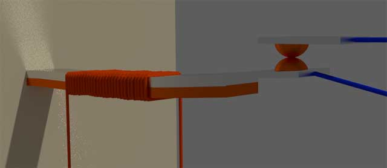

The coefficient of expansion is one of the basis properties of any material. Two different metals always have different degree of linear expansion. A bimetallic strip always bends when it heated up, due to this inequality of linear expansion of two different metals.
Working Principle of Thermal Relay
A thermal relay works depending upon the above mentioned property of metals. The basic working principle of thermal relay is that, when a bimetallic strip is heated up by a heating coil carrying over electric current of the system, it bends and makes normally open contacts.
Construction of Thermal Relay
The construction of thermal relay is quite simple. As shown in the figure above the bimetallic strip has two metals – metal A and metal B. Metal A has lower coefficient of expansion and metal – B has higher coefficient of expansion. One heating coil is would on the bimetallic strip. When over electric current flows through the heating coil, it heats up the bimetallic strip.
Due to the heat generated by the coil, both of the metals are expanded. But expansion of metal B is more than expansion of metal A. Due to this dissimilar expansion the bimetallic strip will bend towards metal A as shown in the figure below.
Thermal Relay

The strip bends, the No contact is closed which ultimately energizes the trip coil of a circuit breaker.
The heating effect is not instantaneous. As per Joule’s law of heating, the amount of heat generated,
where I is the over electric current flowing through the heating coil of thermal relay.
R is the electrical resistance of the heating coil. t is the time for which the electric current I flows through the heating coil. Hence from the above equation it is clear that, heat generator by the coil is directly proportional to the time during which the over electric current flows through the coil. Hence there is a prolonged time delay in the operation of thermal relay.
That is why this type of relay is generally used where over load is allowed to flow for a predetermined amount of time before it trips. If overload or over electric current falls down to normal value before this predetermined time, the relay will not be operated to trip the protected equipment.
A typical application of thermal relay is overload protection of electric motor.
 by
by